一、串口
1、串口资源
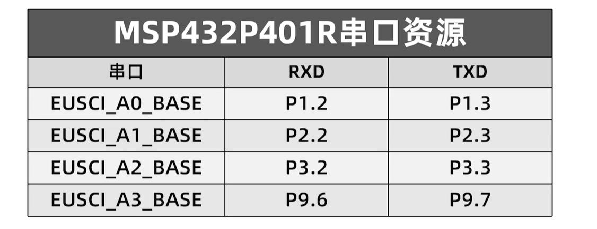
eUSCI_A模块还支持SPI模式
A模块支持串口
B模块支持SPI和IIC
2、配置流程
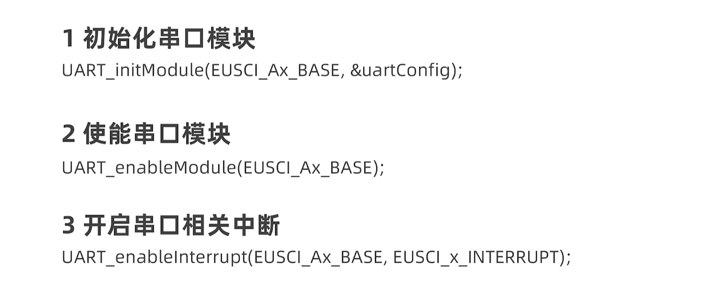
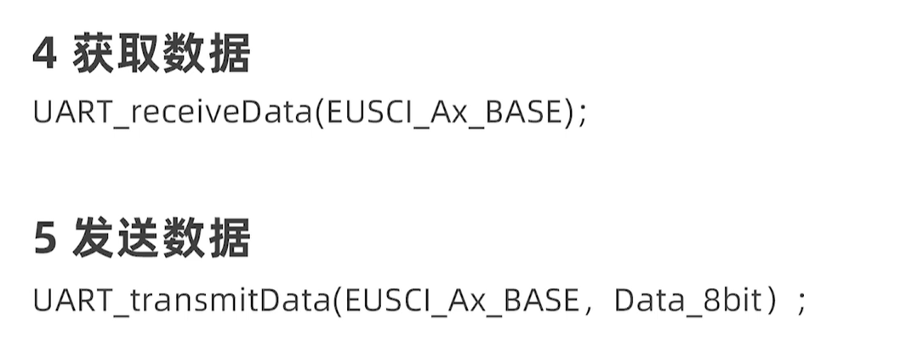
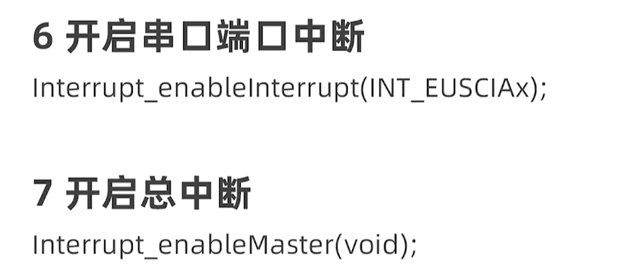
1 | 1、配置时钟 |
二、定时器
1、简介
板载四个定时器A，每个定时器A有五个通道（CCR0,CCR1,CCR2,CCR3,CCR4）
CCR0相当于STM32中的ARR
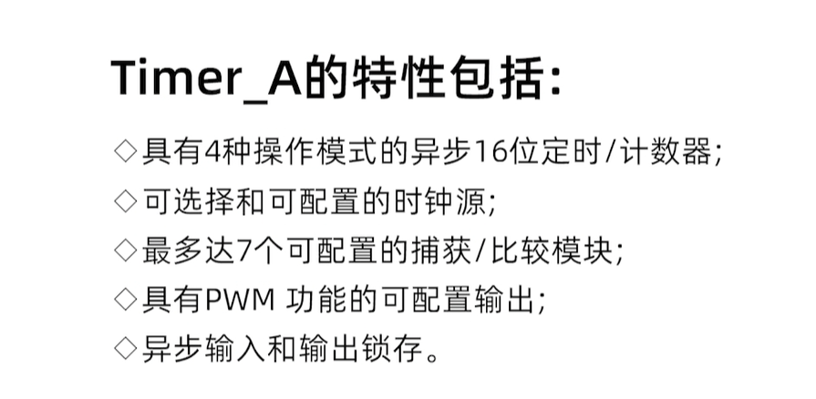
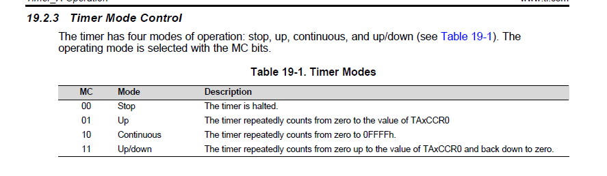
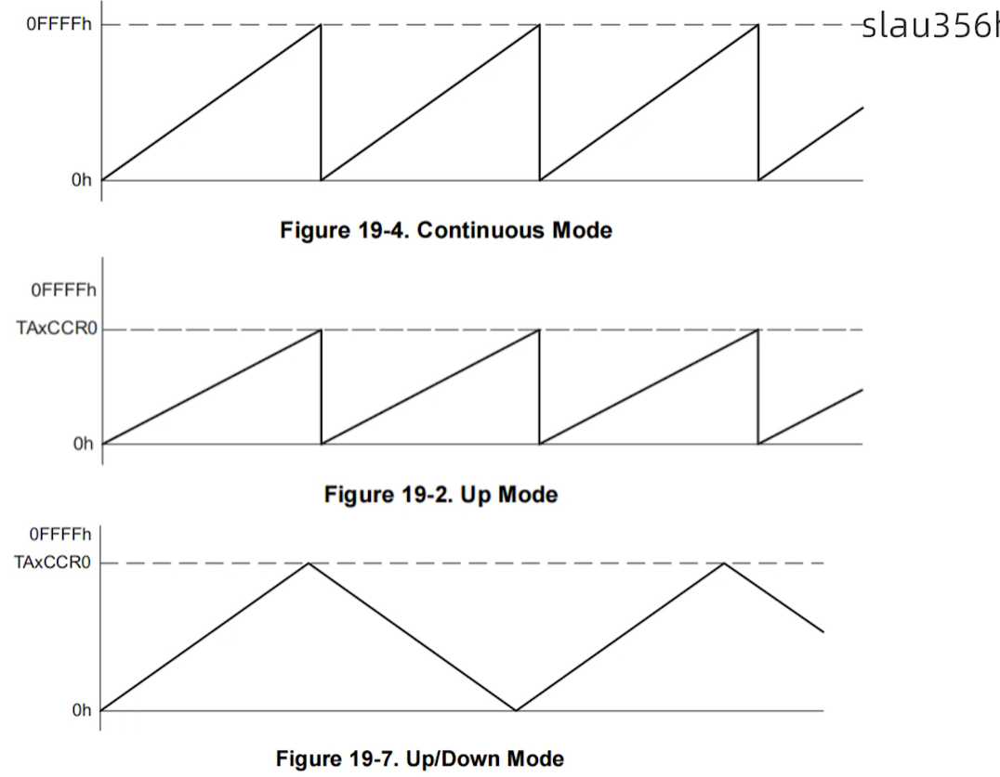
2、配置
1 | //1、初始化定时器模块 |
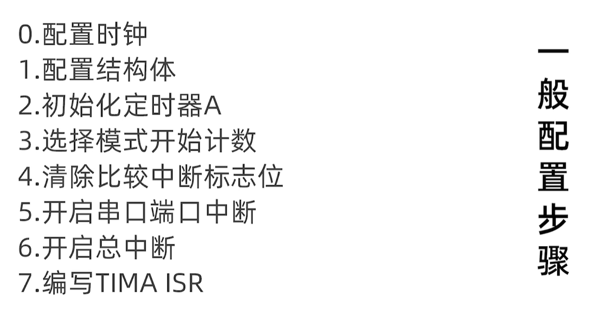
三、PWM
1、简介
定时器A有七种输出模式
常用的是Mode2（Toggle/Reset）和Mode6（Toggle/Set）
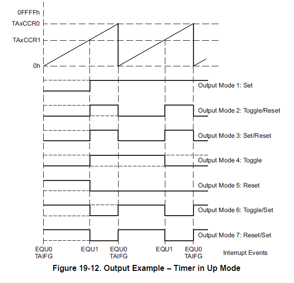
值得一提的是在增减计数模式下，2和6输出模式配合可以生成带死区的PWM
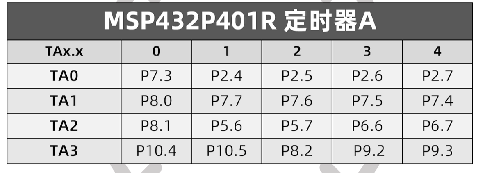
2、配置
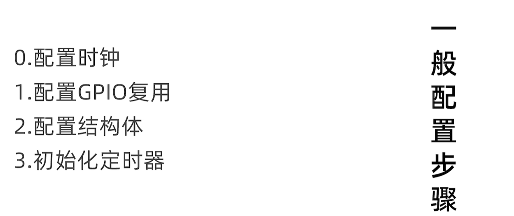
四、输入捕获
1、简介
2、配置
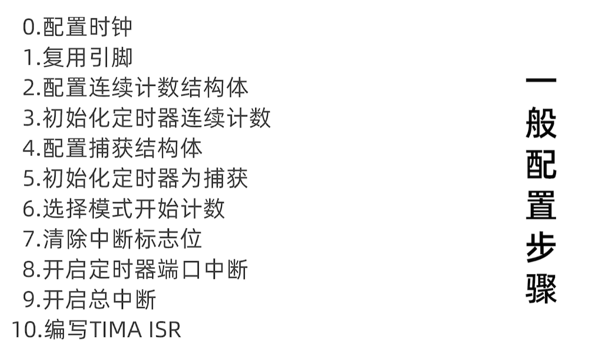
捕获过程
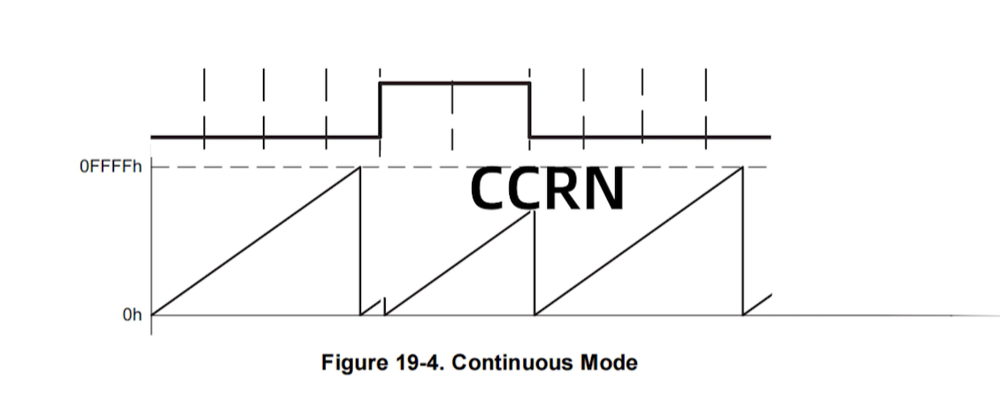
例如：计算高电平时常当检测到上升沿时，将定时器计数值置零，之后捕获到下降沿时读出捕获寄存器CCRN的捕获值，再带入如下公式中即可
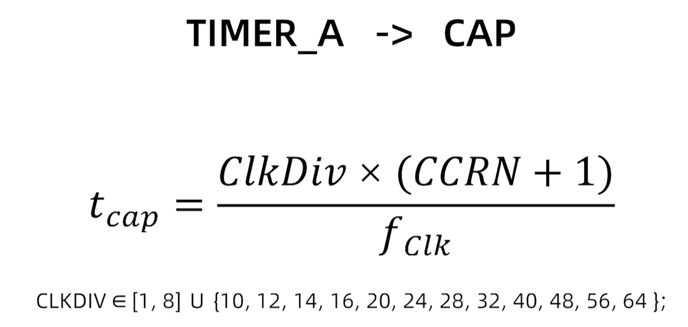
注意在选用定时器通道中断时，只有通道0选用INT_TAX_0，其他的都选INT_TAX_N
五、定时器32
1、简介
MSP432有两个定时器32，分别为定时器32_0和32_1，递减计数
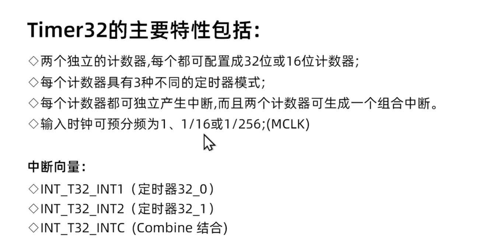
定时器32的时钟源只有MCLK
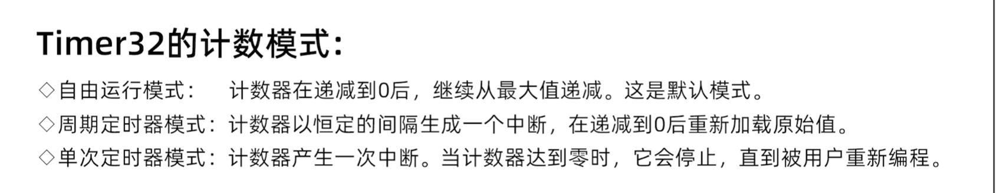
六、IIC
四个EUSCI_B，支持软件和硬件IIC